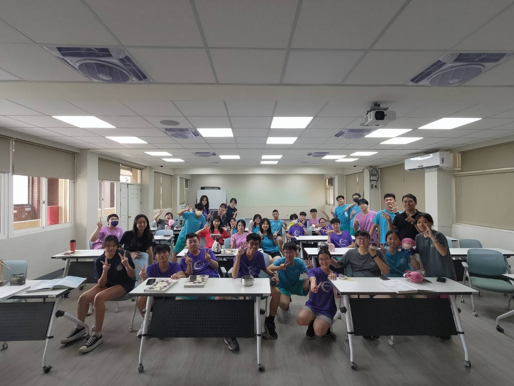
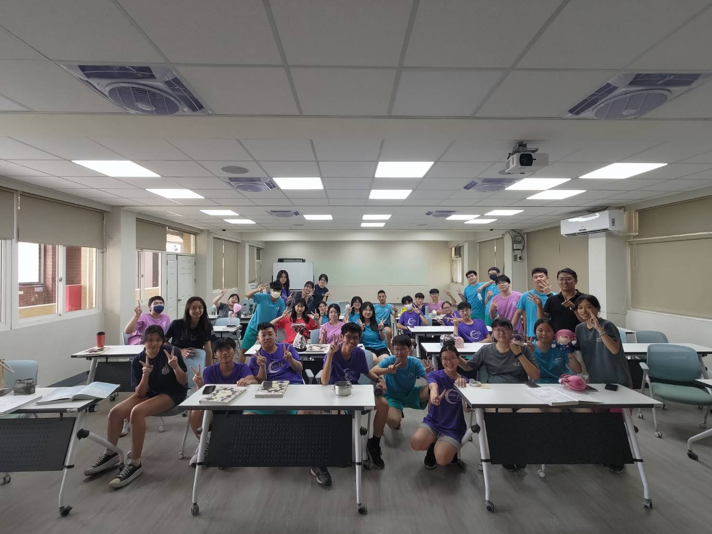
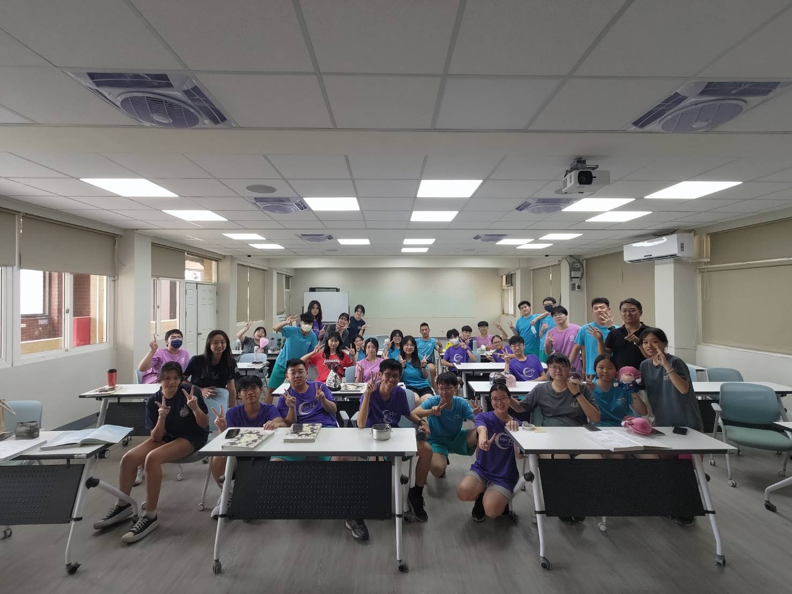
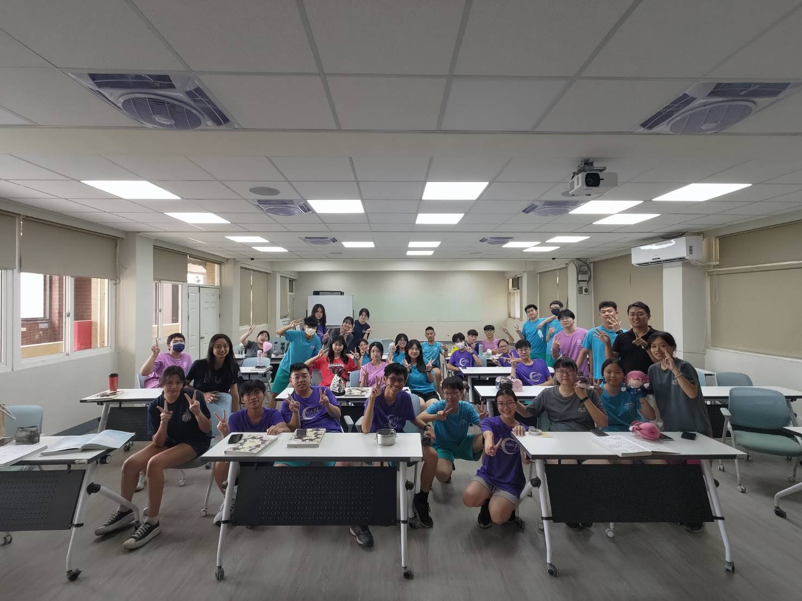

當你看到這個的時候，你已經畢業了。恭喜你，你不是高中生了，你也不是準大學生了，而是一個擁有即將獲得大學學生證的大學生。 當然，考分科的例外，但是，你們也不是高中生了。對看到這個網站的所有人而言，你們完成人生重要的里程碑。
三年來，認識很多不同的人，不管是高一就和我同班的，又或者是高二因緣際會來到了201大家庭，我們共同創造了很多的回憶。 園遊會、運動會、露營，又或者是私下出去玩都好，畢業前，我很珍惜我們相處的每一分每一秒。 即使我知道我們未來大概率會辦同學會，還是見的到面，但，見面的機會就不像是高中，每天看到的都是那些面孔。
我很謝謝我可以認識你們，創造這麼多難忘的過去，能認識你們，真好。
不管你滿不滿意現在的大學或科系，恭喜你，你已經是個準大學生(或以經是大學生)了。你將邁向人上下一個起點。
大學的路不會是簡單的，不管是哪一科系，都會有自己需要面對的難題，期許各位都能突破自己的難關，並且在屬於自己的舞台上發光發熱。 期許各位在大學的路上，不會屢屢碰壁，順順利利走完自己的大學人生。
希望這些祝福，能夠成為你們未來路上的一點點動力，讓你們知道，你並不是被遺忘的那一個。
目前，301的「畢業校友」分布全台各地，不過大多數都在西部平原。
依據我簡單的統計，在所有有大學的人中，分布最多的是高雄，共有七個人，第二是台中，共有五個人。以下是各縣市人數:
| 姓名 | 座號 |
|---|---|
| 基隆 | 32 |
| 台北 | 1、21、23 |
| 桃園 | 4、11、16、29 |
| 台中 | 3、10、12、15、31 |
| 彰化 | 22 |
| 嘉義 | 18、28、30 |
| 台南 | 7、9、26、27 |
| 高雄 | 6、8、13、14、19、20、24 |
| 花蓮 | 25 |
除了你和大學班上固定比較好的那幾個，還有其他人薄弱的感情之外，他們是你最最最好的伙伴，甚至是可以幫你的對象。當然，也請不要忘記其他曾經也是301的人。
畢業之前，我對全班的人都寫了一封信，誠摯的獻上畢業的祝福。
在瓶子內的紙條，旁邊除了我的畢業網站之外，還有另一個QR Code，那邊有我想對你說的話。
(或者，你也可以在下面的欄位輸入屬於你的代碼，這串代碼是英文而且在那張紙條的上面。)
這首歌主要在講你比你想的還要強，只要肯努力，總有一天可以站上頂峰。
希望各位都可以相信自己，發揮自己的長處，即使分別了也要好好加油。
不知道什麼時候見面，但是珍重再見啦，各位! 要永遠記得彼此喔!
也許這個網站不會被記得，也不知道這個做的好不好，但是你們願意點進來花時間看完，我還是蠻感動的。